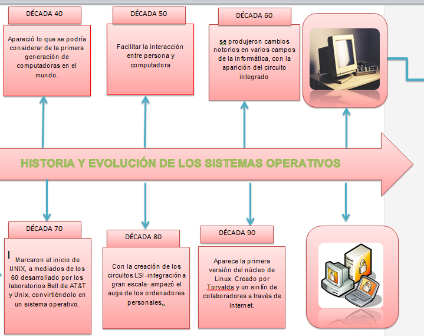
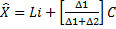
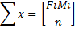
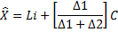
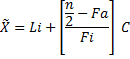
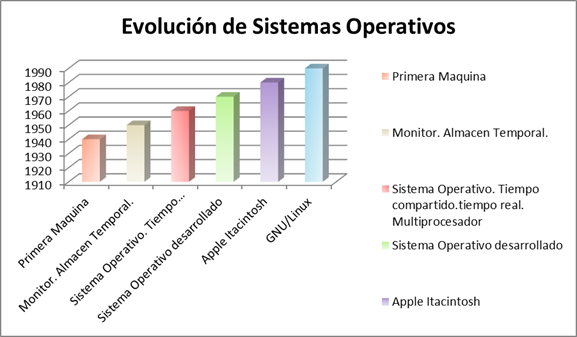

Sistema Operativo
Es de suma importancia para un equipo (computadora), ya que sin él, una computadora no enciende existen muchas variedades de sistemas operativos pero los más conocidos son el Windows 7, Unix, Linux y MacOs. Estos sistemas operativos aunque tienen nombres diferentes tienen un mismo objetivo al ser instalados en una computadora.
Historia de la Computadora
La computadora es una maquina electrónica capaz de ordenar, procesar y elegir un resultado con una información. La computadora cuenta con varias herramientas para realizar diferentes acciones. La historia de la computadora tuvo muchas modificaciones como por ejemplo en las siguientes décadas:
DÉCADA DE 1940
A finales de la década de 1940, apareció lo que se podría considerar de la primera generación de computadoras en el mundo. Se accedía directamente a la consola de la computadora desde la cual se actuaba sobre una serie de micro interruptores que permitían introducir directamente el programa en la memoria de la computadora.
DÉCADA 1950 (Sistema Bach)
A principios de los años 1950 con el objetivo de facilitar la interacción entre persona y computadora, los sistemas operativos hacen una aparición discreta y bastante simple, con conceptos tales como el monitor residente y el almacenamiento temporal.
Su funcionamiento era bastante simple, se limitaba a cargar programas a la memoria, leyéndolos de una cinta o de tarjetas perforadas, y ejecutarlos. El problema era encontrar una forma de optimizar el tiempo entre la retirada de un trabajo y el montaje del siguiente.
El primer Sistema Operativo de la historia fue creado en 1956 para un ordenador IBM 704, y básicamente lo único que hacía era comenzar la ejecución de un programa cuando el anterior terminaba.
Su objetivo era disminuir el tiempo de carga de los programas, haciendo simultánea la carga del programa o la salida de datos con la ejecución de la siguiente tarea.
DÉCADA 1960
En los años 60 se produjeron cambios notorios en varios campos de la informática, con la aparición del circuito integrado la mayoría orientados a seguir incrementando el potencial de los ordenadores. Para ello se utilizaban técnicas de lo más diversas.
En un sistema "multiprogramado" la memoria principal alberga a más de un programa de usuario. La CPU ejecuta instrucciones de un programa, cuando el que se encuentra en ejecución realiza una operación de E/S; en lugar de esperar a que termine la operación de E/S, se pasa a ejecutar otro programa. Si éste realiza, a su vez, otra operación de E/S, se mandan las órdenes oportunas al controlador, y pasa a ejecutarse otro. De esta forma es posible, teniendo almacenado un conjunto adecuado de tareas en cada momento, utilizar de manera óptima los recursos disponibles.
Artículo principal: Tiempo compartido
En este punto tenemos un sistema que hace buen uso de la electrónica disponible, pero adolece la falta de interactividad; para conseguirla debe convertirse en un sistema multiusuario, en el cual existen varios usuarios con un terminal en línea, utilizando el modo de operación de tiempo compartido. En estos sistemas igual que en la multiprogramación. Pero, a diferencia de ésta, cuando un programa lleva cierto tiempo ejecutándose el sistema operativo lo detiene para que se ejecute otra aplicación.
Estos sistemas se usan en entornos donde se deben aceptar y procesar en tiempos muy breves un gran número de sucesos, en su mayoría externos al ordenador. Si el sistema no respeta las restricciones de tiempo en las que las operaciones deben entregar su resultado se dice que ha fallado. El tiempo de respuesta a su vez debe servir para resolver el problema o hecho planteado. El procesamiento de archivos se hace de una forma continua, pues se procesa el archivo antes de que entre el siguiente, sus primeros usos fueron y siguen siendo en telecomunicaciones.
Diseño que no se encuentran en ordenadores monoprocesador. Estos problemas derivan del hecho de que dos programas pueden ejecutarse simultáneamente y, potencialmente, pueden interferirse entre sí. Concretamente, en lo que se refiere a las lecturas y escrituras en memoria. Existen dos arquitecturas que resuelven estos problemas:
La arquitectura NUMA, donde cada procesador tiene acceso y control exclusivo a una parte de la memoria. La arquitectura SMP, donde todos los procesadores comparten toda la memoria. Esta última debe lidiar con el problema de la coherencia de caché. Cada microprocesador cuenta con su propia memoria caché local. De manera que cuando un microprocesador escribe en una dirección de memoria, lo hace únicamente sobre su copia local en caché. Si otro microprocesador tiene almacenada la misma dirección de memoria en su caché, resultará que trabaja con una copia obsoleta del dato almacenado.
Para que un multiprocesador opere correctamente necesita un sistema operativo especialmente diseñado para ello. La mayoría de los sistemas operativos actuales poseen esta capacidad.
DÉCADA 1970
Además del Atlas Supervisor y el OS/360, los años 1970 marcaron el inicio de UNIX, a mediados de los 60 aparece Multics, sistema operativo multiusuario - multitarea desarrollado por los laboratorios Bell de AT&T y Unix, convirtiéndolo en uno de los pocos Sistemas Operativos escritos en un lenguaje de alto nivel. En el campo de la programación lógica se dio a luz la primera implementación de Prolog, y en la revolucionaria orientación a objetos, Smalltalk.
Con la creación de los circuitos LSI -integración a gran escala-, chips que contenían miles de transistores en un centímetro cuadrado de silicio, empezó el auge de los ordenadores personales. Un avance importante que se estableció a mediados de la década de 1980 fue el desarrollo de redes de computadoras personales que corrían sistemas operativos en red y sistemas operativos distribuidos. En esta escena, dos sistemas operativos eran los mayoritarios: MS-DOS, escrito por Microsoft para IBM PC y otras computadoras que utilizaban la CPU Intel 8088 y sus sucesores, y UNIX, que dominaba en los ordenadores personales que hacían uso del Motorola 68000.
Muchos usuarios, al ver que estaba completamente diseñado para funcionar a través de una GUI, acostumbrados a la línea de comandos, lo tacharon de juguete. A pesar de todo, el Mac se situó a la cabeza en el mundo de la edición a nivel gráfico.
En 1981 Microsoft compró un sistema operativo llamado QDOS que, tras realizar unas pocas modificaciones, se convirtió en la primera versión de MS-DOS. A partir de aquí se sucedieron una serie de cambios hasta llegar a la versión 7.1, a partir de la cual MS-DOS dejó de existir como tal y se convirtió en una parte integrada del sistema operativo Windows.
Familia de sistemas operativos propietarios desarrollados por la empresa de software Microsoft Corporación, fundada por Bill Gates y Paul Allen. Todos ellos tienen en común el estar basados en una interfaz gráfica de usuario basada en el paradigma de ventanas, de ahí su nombre en inglés. Las versiones de Windows que han aparecido hasta el momento se basan en dos líneas separadas de desarrollo que finalmente convergen en una sola con la llegada de Windows XP. La primera de ellas conformaba la apariencia de un sistema operativo, aunque realmente se ejecutaba sobre MS-DOS.
Actualmente existe Windows Vista.
En 1991 aparece la primera versión del núcleo de Linux. Creado por Linux Torvalds y un sinfín de colaboradores a través de Internet. Este sistema se basa en Unix, un sistema que en principio trabajaba en modo comandos, estilo MS-DOS. Hoy en día dispone de Ventanas, gracias a un servidor gráfico y a gestores de ventanas como KDE, GNOME entre muchos. Recientemente GNU/Linux dispone de un aplicativo que convierte las ventanas en un entorno 3D. Lo que permite utilizar Linux de una forma muy visual y atractiva.
La evolución de los sistemas operativos es paralela a la evolución de las computadoras ya que su principal función siempre fue y es controlar a la computadora.
Inicialmente la principal función de los sistemas operativos era controlar eficientemente los recursos del sistema, sobre todo por el alto costo de esas primeras computadoras y la perdida que significaba tener equipos tan costosos haciendo su tarea de manera ineficiente.
La primera computadora digital real fue disecada por el matemático inglés Charles Babbage. En cada década fueron revolucionando cada sistema operativo para facilitar el manejo de las computadoras ya que en cada década tuvieron diferentes objetivos para facilitar la interacción entre personas y computadoras tales como el monitor y el almacenamiento. Los sistemas operativos hacen una aparición discreta y bastante simple uno de principales objetivo era para disminuir el tiempo de carga de los programas haciendo simultanea la carga del programada o salida de datos con la ejecución de las tareas. Un programa estaba formado por todo el conjunto de instrucciones que la computadora necesitaba para llevar a cabo sus funciones, por ejemplo, instruía a la CPU acerca de detalles, tales como: donde y cuando almacenar las instrucciones de memoria, que calcular, donde encontrar los datos, donde enviar la salida, etc.

En probabilidad y estadística: es una herramienta fundamental ya que nos ayuda a descubrir una parte importante de las computadoras como del software cada cuando se modifica y como cada cuanto tiempo tubo sus apariciones ejemplo:
Nos ayudara ala suma de nuestros datos y poder obtener un resultado correcto. Utilizaremos esta forma para descubrir
. 
Es un valor que aparece con mayor frecuencia en un conjunto de datos es las veces que un sistema operativo aparece pero con diferente capacidad.

El valor de la mediana se obtiene de la distribución de frecuencias.


Distribución de frecuencias
MODELO |
MODIFICACIONES |
FRECUENCIA |
1940 PRIMERA MAQUINA |
l |
1 |
1950 SISTEMA BACHT |
ll |
2 |
1960 CIRCUITOS INTEGRADOS |
llll |
4 |
1970 OS/360 |
l |
1 |
1980 CREACIÓN DE CIRCUITOS LSI |
lll |
3 |
1990 GNU/LINUX |
l |
1 |
De la década 1940 apareció la primera máquina del mundo, década 1950 aparece el sistema bacht y su objetivo era facilitar la interacción entre persona y computadora en ella apareció en monitor residente, almacenamiento temporal. En la década 1960 se produjeron cambios notorios en varios campos y aparece un sistema operativo multiprogramación y a su vez un tiempo compartido, tiempo real, multiprocesador .Década 1970 tiene sistemas operativos desarrollados. Década 1980 tiene apariciones como Apple Macintosh y MS-DOS, Microsoft Windows. Década 1990 apareció GNU que tuvo una modificación que fue Linux.